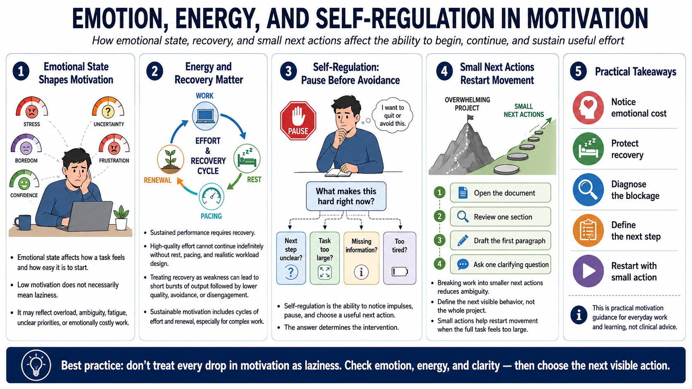

Emotion, Energy, and Self-Regulation
Connecting to LMS... Progress: in progress

Narration
Emotional state affects motivation. Stress, uncertainty, boredom, frustration, and confidence can all change how a task feels and how easy it is to start. This course is not offering clinical guidance, but in everyday work and learning it is useful to notice that low motivation may not mean laziness. It may reflect overload, ambiguity, fatigue, unclear priorities, or a task that has become emotionally costly.
Energy matters because sustained performance requires recovery. People cannot produce high-quality effort indefinitely without rest, pacing, and realistic workload design. Treating recovery as a weakness can create short bursts of output followed by lower quality, avoidance, or disengagement. Sustainable motivation includes cycles of effort and renewal, especially for complex work that requires judgment and attention.
Self-regulation is the ability to notice impulses, pause, and choose a useful next action. One practical move is to pause before avoidance. Instead of immediately abandoning the task, the person can ask what makes this hard right now. Is the next step unclear? Is the task too large? Is there missing information? Is the person tired? The answer determines the intervention.
Breaking work into smaller next actions can help because it reduces ambiguity. Start by defining the next visible behavior, not the whole project. Open the document. Review one section. Draft the first paragraph. Ask one clarifying question. Small actions are not a trick to deny difficulty. They are a way to restart movement when the full task feels too large to approach all at once.